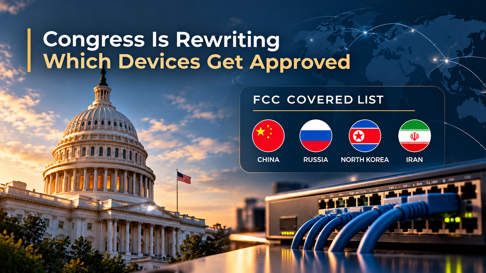

In Plain English
The FCC keeps a list of communications equipment and services the U.S. government considers a national security risk. A new product from that list cannot get the FCC approval it needs to be marketed or sold here. On September 23, the Republican chairman and the senior Democrat of the House Energy and Commerce Committee released a bill that would rewrite how that list works.
The bill pulls in two directions at once. It would let the list reach more kinds of technology, bar listed companies and their affiliates from holding any FCC license, and require the list to be updated at least every six months. It would also limit new listings to products from companies controlled by China, Russia, Iran or North Korea, and remove the fast track the FCC has used this year to ban entire product categories based on where they are made.
It is a proposal, not law. But for anyone buying or selling network equipment expected to last five years, the rules that decide which devices get approved are now being renegotiated in the open.
What the bill would do
The Communications and Technology Transparency Act of 2026, from Chairman Brett Guthrie (R-KY) and Ranking Member Frank Pallone Jr. (D-NJ), amends the Secure and Trusted Communications Networks Act of 2019, the law that created the Covered List. In a joint statement, the sponsors said the current process "lacks the transparency, consistency, and clarity needed to meet our long-term national security needs as technology rapidly advances."
Based on the bill text and the committee's section-by-section summary, it would:
- Replace "communications equipment or service" with "information and communications technology or service," the broader term used in the Commerce Department's supply chain rules.
- Narrow the determinations the FCC must rely on to a Commerce Department prohibition under those rules, plus items Congress has written into statute through the 2019 and 2025 defense authorization acts.
- Allow new listings only for technology "produced or provided by an entity controlled by a foreign adversary," defined as China, Russia, Iran and North Korea.
- Require the FCC to update the list at least every six months, with a defined process for removals.
- Require seven days' notice to Congress before any addition, and make additions that cover a whole class of technology without naming a company subject to the Congressional Review Act.
- Bar listed entities and their affiliates from any FCC license, authorization or other grant of authority.
- Require the FCC and Commerce to coordinate every 90 days and report to Congress annually.
- Confirm the FCC does not have to review or revoke equipment authorizations granted before a product was listed.
Items already on the list would stay there. The bill states that its changes do not affect anything listed before enactment.
The part most coverage will miss
The headline is expansion. The bill text tells a more complicated story.
Since December 2025, the FCC has added entire product categories to the Covered List: foreign-produced drones and their critical components in December, foreign-produced consumer routers in March, and foreign-produced power inverters and advanced robotic devices in July. Each rested on a national security determination from an executive branch interagency body convened by the White House, and each turned on where a product was made rather than who owns the manufacturer. That is why those listings reach products built in allied countries and by U.S. companies that manufacture offshore.
The bill strikes the two provisions of the 2019 law that made those determinations possible: the interagency body route and the "appropriate national security agency" route. Going forward, a new listing would need a Commerce Department prohibition or an act of Congress, and the product would have to come from an entity controlled by one of the four named adversaries. The committee's announcement describes equipment "manufactured from" those countries as eligible. The bill text does not use manufacturing location as the test. It uses control.
Read together, these provisions suggest a Congress that wants the list to be broader in what it can reach, narrower in whom it can target, and slower and more reviewable in how it grows. That is our reading of the text, not a stated intention. For a vendor that manufactures in Vietnam or Mexico and is not controlled by an adversary, the future risk would fall. For a vendor controlled from an adversary country, it would rise, because the list could reach a wider range of technology and services and the licensing bar would follow its affiliates.
The affiliate bar may have the longest reach. FCC authority covers far more than equipment approvals, including spectrum licenses, international Section 214 authority, and satellite and earth station licenses. The Communications Act defines an affiliate through ownership or control, and treats an equity interest above 10 percent as ownership. A company with a modest corporate connection to a listed entity could find routine FCC filings blocked.
What it would mean in practice
Consider a regional carrier planning a core and aggregation router refresh. Its shortlist includes a vendor headquartered in China whose carrier-grade products are not currently listed. The March consumer router listing does not, by its terms, reach carrier platforms.
Suppose the bill became law and Commerce prohibited transactions involving that vendor's equipment. The FCC could then list it. New models would lose their path to equipment authorization. Models already authorized would likely remain legal to operate. The carrier would still be building five years of network on a platform with no new hardware approvals, uncertain support, and a vendor whose affiliates could no longer hold FCC licenses.
The refresh that looked cheapest on paper would turn into a forced migration partway through its lifecycle. The industry has lived through this before with the Huawei and ZTE replacement program, and those costs were counted in years.
What to do now
It is too early to act on the bill itself. It is not too early to understand your exposure. CIOs, CTOs, network architects, security teams, and procurement and supply chain risk leaders should:
- Map network and IoT equipment by manufacturer, country of production and ultimate corporate parent, including OEM and white label relationships where the brand on the box is not the maker.
- Identify affiliate relationships that touch FCC licenses you hold or depend on, including those of vendors and service partners.
- Document replacement lead times and the architecture changes a substitution would force, particularly where one vendor dominates a network layer.
- Add Covered List status, country of production and ownership to selection criteria for any purchase with a multiyear life.
- Track the bill alongside the FCC's own actions. The FCC prohibited the importation and marketing of certain covered equipment in June and has proposed going further since.
Vendors have a parallel task. Know who controls you, document where you manufacture, and be ready to show both to customers who are about to start asking.
Supply chain restrictions are no longer occasional events in network planning. They are a standing condition, and the rules that govern them are now moving in more than one direction at once. North Velocity Group works with operators, enterprises and infrastructure providers to identify foreign equipment exposure, assess vendor and affiliate dependencies, and build substitution roadmaps before a designation sets the timeline for them.
The organizations that handle the next listing well will be the ones that did the mapping while it was still optional.
Align. Modernize. Transform.
Sources & Further Reading
- Communications and Technology Transparency Act of 2026, bill text as released by the House Energy and Commerce Committee, September 23, 2026.
- House Energy and Commerce Committee, Communications and Technology Transparency Act of 2026: Section-by-Section.
- House Energy and Commerce Committee, "Pallone & Guthrie Introduce Legislation to Improve the Process for Adding Tech and Telecom Equipment to the FCC's Covered List," September 23, 2026.
- Federal Communications Commission, List of Equipment and Services Covered by Section 2 of the Secure Networks Act, including public notices of 2025 and 2026 additions.
- FCC Public Safety and Homeland Security Bureau, Public Notice DA 26-278, addition of routers produced in foreign countries to the Covered List, March 23, 2026.
- Morgan Lewis, "FCC Adds Foreign-Produced Advanced Robotic Devices and Power Inverters to Covered List, Opens Conditional Approval Process," August 2026.
- Baker McKenzie, "US: FCC Adds Inverters and Robotics to Covered List," August 14, 2026.
- 47 U.S.C. § 153, definitions under the Communications Act of 1934, including "affiliate."
Information current as of September 24, 2026. Bill provisions described above are drawn from the bill text and section-by-section summary released by the House Energy and Commerce Committee on September 23, 2026. The Communications and Technology Transparency Act has been introduced but not enacted. It may be amended, may not advance, and its provisions may never become law. Prior Covered List actions are drawn from FCC public notices. Statements about potential effects on enterprises, vendors and carriers are forward-looking analysis, not predictions of outcome. Statements attributed to the sponsors are their public statements.
Disclosure: This article is published by North Velocity Group LLC (NVG) for informational and analytical purposes. It reflects NVG's interpretation of publicly available information and does not constitute legal, financial, investment, regulatory, procurement or other professional advice. NVG has no affiliation with, and no financial interest in, any company, agency or organization named in this article. All company and product names are the trademarks of their respective owners and are used here for identification and commentary only. Header image is AI-generated.